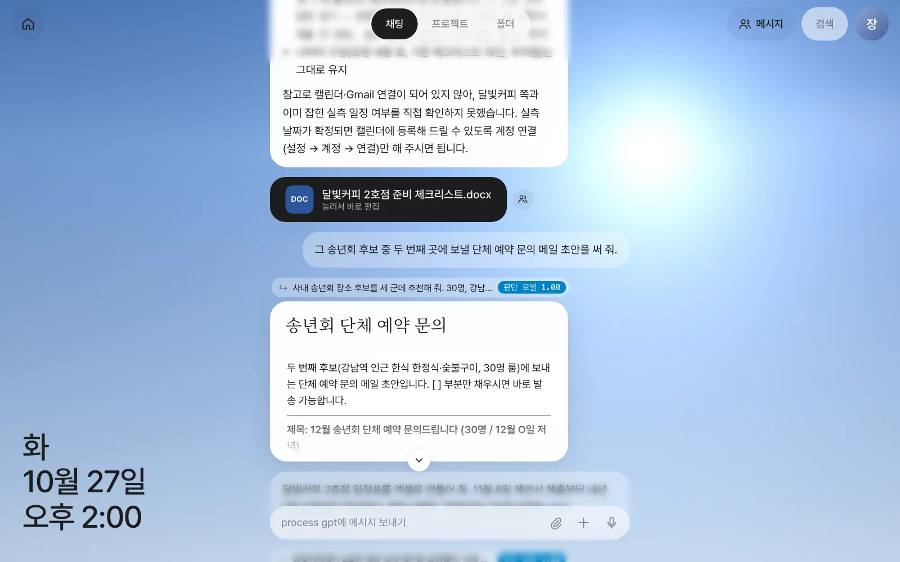
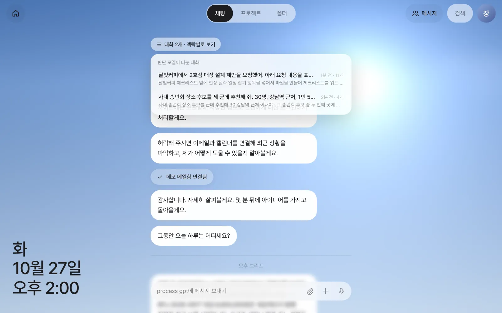
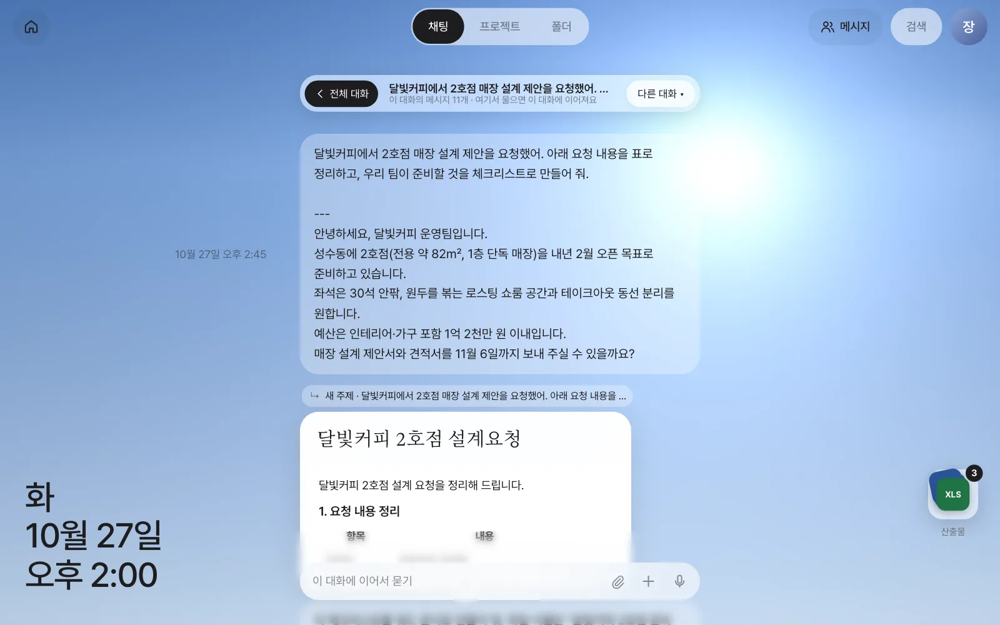
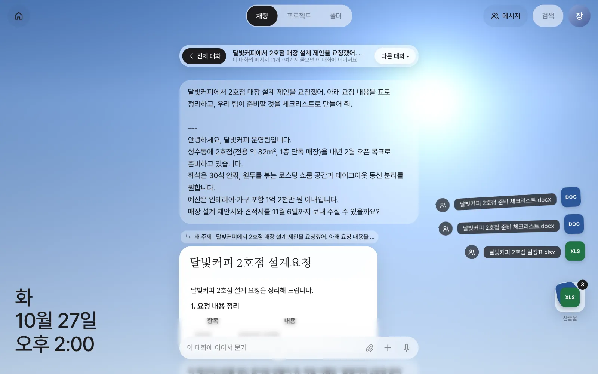

한 채팅창에서 달빛커피 일과 송년회 준비를 번갈아 시켜 보고, 비서가 메시지마다 어느 이야기의 후속인지 판단해 대화를 나누는 모습을 확인합니다. 대화 목록에서 한 대화만 골라 보고, 그 대화에서 만든 파일이 쌓인 산출물 더미를 펼쳐 엽니다.
왜 대화가 알아서 나뉘어야 하나#
3장에서는 달빛커피 이야기 하나만 했습니다. 하지만 실제 업무는 한 가지씩 차례로 오지 않습니다. 달빛커피 체크리스트를 고치다가 송년회 장소를 알아보고, 다시 달빛커피 일정표로 돌아옵니다. 보통의 AI 채팅에서는 이럴 때 둘 중 하나를 해야 합니다.
- 주제마다 새 대화방을 직접 만들고 오가며 고른다 — 번거롭고, 방을 잘못 고르기 쉽습니다.
- 한 방에 다 섞는다 — 비서가 “그 체크리스트”가 어느 것인지 헷갈리고, 나중에 찾기 어렵습니다.
Process GPT Lite는 세 번째 길을 씁니다. 채팅창은 하나로 두고, 메시지가 올 때마다 비서 앞단의 대화 맥락 라우터(메시지를 알맞은 대화로 보내 주는 장치)가 “이 말은 어느 이야기의 후속인가, 새 주제인가”를 판단해 그 대화로 보냅니다. 여러분은 그냥 말하면 되고, 정리는 비서가 합니다.
라우터가 연결돼 있어야 합니다
현재 설치 번들에는 대화 맥락 라우터와 판단 모델이 빠져 있으므로, 이 장을 따라 하려면 운영자에게 연결을 부탁하세요(1장). 연결되지 않은 서버에서는 모든 메시지가 하나의 대화로 이어지고, 이 장의 「대화 N개」 막대와 산출물 더미가 나타나지 않습니다.
판단은 어떻게 하나#
라우터는 사용자의 최근 대화들(제목과 요약)을 후보로 놓고, 새 메시지가 어느 후보의 후속인지 고릅니다.
| 단계 | 하는 일 |
|---|---|
| 후보 좁히기 | 대화가 많아도 판단 모델에는 6개 이하만 넘깁니다. 가장 최근 대화 둘은 늘 남기고, 나머지는 메시지와 낱말이 겹치거나 뜻이 가까운 순으로 고릅니다 |
| 작은 판단 모델 | 빠르고 싼 전용 판단 모델이 먼저 고릅니다(답 위 줄의 “판단 모델”) |
| 큰 모델로 다시 | 판단 모델이 확신하지 못하면 기본 AI 모델에게 다시 묻고, 그 답의 확률로 확신도를 잽니다(“판단 모델→logprob”) |
| 확신이 없으면 그대로 | 확신도가 기준보다 낮으면 대화를 옮기지 않고 지금 있던 대화에 머뭅니다 |
판단 결과는 답 위의 작은 줄에 그대로 보입니다.
| 표시 | 뜻 |
|---|---|
| ↳ 새 주제 · (제목) | 새 대화를 시작했습니다 |
| ↳ (제목) | 그 제목의 대화에 이어 붙였습니다 |
| 판단 모델 1.00 | 판단 모델이 고른 것이고, 확신도는 1.00(최대)입니다 |
| 판단 모델→logprob 0.99 | 판단 모델이 망설여 기본 AI 모델에게 다시 물었고, 확신도는 0.99입니다 |
| 대화에서 직접 1.00 | 대화 안에서 보낸 말이라 판단 없이 그 대화로 갔습니다 (아래 따라 하기 2) |
| (표시 없음) | 고른 근거가 따로 없는 경우(첫 메시지 등)는 표시를 생략합니다 |
대화 제목은 그 대화를 시작한 메시지의 앞부분입니다. 그래서 처음 말을 꺼낼 때 “달빛커피에서…”, “사내 송년회…”처럼 무엇에 관한 일인지 앞에 밝히면 목록에서 알아보기 쉽습니다.
따라 하기 1 — 주제를 섞어 말하기#
3장에서 달빛커피 대화를 하나 만들었습니다. 이제 다른 일을 끼워 넣었다가 돌아옵니다. 판단 결과를 하나씩 확인하기 쉽도록 각 메시지를 보내고 답이 온 뒤 다음 것을 보냅니다. 기다리지 않고 보내도 됩니다. 이미 진행 중인 대화의 후속이면 그 대화로 가서 「대기」로 표시됐다가 앞 답이 끝나면 이어서 답하고, 다른 대화로 가는 메시지는 기다리지 않고 나란히 진행됩니다.
| 순서 | 보낼 말 | 기대하는 판단 |
|---|---|---|
| 1 | 사내 송년회 장소 후보를 세 군데 추천해 줘. 30명, 강남역 근처, 1인 5만 원 이내야. |
새 주제 |
| 2 | 달빛커피 체크리스트 맨 앞에 "현장 실측 일정 잡기" 항목을 넣어서 파일을 다시 만들어 줘. |
달빛커피 대화에 이어짐 |
| 3 | 그 송년회 후보 중 두 번째 곳에 보낼 단체 예약 문의 메일 초안을 써 줘. |
송년회 대화에 이어짐 |
| 4 | 달빛커피 2호점 일정표를 엑셀로 만들어 줘. 11월 6일 제안서 제출부터 내년 2월 오픈까지 역산해서. 파일 이름은 "달빛커피 2호점 일정표.xlsx". |
달빛커피 대화에 이어짐 |
실습에서 나온 판단은 다음과 같습니다.
| 순서 | 판단 | 근거 표시 | 산출물 |
|---|---|---|---|
| 1 | 새 주제 | 판단 모델→logprob 0.99 | 송년회 후보 표 |
| 2 | 달빛커피 대화에 이어짐 | 판단 모델 1.00 | 고친 달빛커피 2호점 준비 체크리스트.docx |
| 3 | 송년회 대화에 이어짐 | 판단 모델 1.00 | “송년회 단체 예약 문의” 문서 카드 |
| 4 | 달빛커피 대화에 이어짐 | 판단 모델 1.00 | 달빛커피 2호점 일정표.xlsx |

확인할 것: 2번 답 위에는 “↳ 달빛커피에서 2호점…”, 3번 답 위에는 “↳ 사내 송년회 장소…”가 붙어 있으면 됩니다. 2번의 “체크리스트”를 송년회가 아니라 달빛커피 이야기의 후속으로 알아듣고, 3번에서 “그 송년회 후보”를 앞의 송년회 표에서 찾았다는 뜻입니다.
판단이 틀릴 때
판단 모델도 틀릴 수 있습니다. 전혀 다른 주제인데 앞 대화에 이어 붙거나, 그 반대일 수 있습니다. 답 위의 줄이 기대와 다르면, 아래 따라 하기 2처럼 원하는 대화에 들어가서 다시 말하세요. 대화 안에서 보낸 메시지는 판단을 거치지 않고 그 대화로 곧장 갑니다.
따라 하기 2 — 대화 목록에서 하나만 보기#
채팅 맨 위로 올리면 「대화 2개 · 맥락별로 보기」 버튼이 있습니다. 누르면 판단 모델이 나눈 대화 목록이 열립니다. 각 줄에는 제목, 마지막으로 이어진 때, 메시지 수, 최근 요청 요약이 보입니다.

달빛커피 대화를 누르면 채팅이 그 대화의 메시지만 보이도록 바뀝니다. 주소도 /chat/c/…로 바뀌므로, 이 주소를 북마크해 두면 나중에 그 대화로 바로 돌아옵니다.

| 버튼·표시 | 하는 일 |
|---|---|
| 「‹ 전체 대화」 | 모든 메시지가 섞인 원래 채팅으로 돌아갑니다 |
| 제목 아래 “이 대화의 메시지 N개 · 여기서 물으면 이 대화에 이어져요” | 이 화면에서 보내는 말은 판단 없이 이 대화로 갑니다 |
| 「다른 대화 ▾」 | 목록을 다시 열어 다른 대화로 옮겨 갑니다 |
| 오른쪽 아래 더미와 숫자 | 이 대화의 산출물 (아래 따라 하기 3) |
답 위의 “↳ …” 줄을 눌러도 그 대화로 바로 들어갑니다.
따라 하기 3 — 산출물 더미#
한 대화 안에서는 그 대화가 만든 파일이 오른쪽 아래에 더미로 쌓입니다. 맨 위에는 가장 최근 파일이 보이고, 오른쪽 위 숫자가 파일 수입니다. 대화를 길게 거슬러 올라가지 않아도 산출물을 한곳에서 찾을 수 있습니다.
더미를 누르면 파일들이 위로 부채꼴로 펼쳐집니다. 파일이 많아 화면에 다 들어가지 않으면(8개 넘게) 격자로 바뀌고, 「모두 공유」 버튼도 생깁니다.

| 하고 싶은 것 | 하는 법 |
|---|---|
| 파일 열기 | 펼친 줄의 이름이나 아이콘을 누릅니다. 채팅의 파일 카드를 누른 것과 같은 편집기가 열립니다(워드·엑셀·한글 → 이음오피스, 도면·그림 → ArtCraft) |
| 팀원에게 보내기 | 줄 왼쪽의 사람 모양 버튼 (14장) |
| 접기 | 더미를 다시 누르거나, 바깥을 누르거나, Esc |
확인할 것: 달빛커피 대화의 더미 숫자가 3이고, 펼치면 달빛커피 2호점 준비 체크리스트.docx 두 개(3장에서 만든 것, 따라 하기 1의 2번에서 고친 것)와 달빛커피 2호점 일정표.xlsx가 보이면 됩니다. 송년회 대화로 옮기면 그 대화에는 파일이 없으므로 더미가 나타나지 않습니다.
산출물 더미는 9장에서 진가를 발휘합니다
9장에서는 메일 한 통으로 평면도·제안서·견적서가 한꺼번에 만들어지고, 고칠 때마다 편집본이 쌓입니다. 그때 이 더미를 열면 한 고객의 산출물이 모두 모여 있습니다.
영상으로 보기
대화 맥락 라우터와 대화 맥락별로 보기 영상에서 같은 흐름을 볼 수 있습니다.
다음 장으로#
지금까지는 여러분이 먼저 말을 걸었습니다. 다음 장에서는 메일함을 비서에게 맡겨, 비서가 먼저 새 메일을 읽고 할 일을 찾아 오게 합니다(5장).
확인 문제
- 전체 채팅에서
송년회 메일 초안에 원하는 날짜를 12월 18일 저녁으로 넣어 줘라고 보내 보세요. 어느 대화로 갔나요? 근거 표시는 무엇인가요? - 이번에는 달빛커피 대화 안에 들어가서
예산 1억 2천만 원 안에서 가구 비중은 보통 어느 정도야?라고 물어보세요. 답 위의 줄은 어떻게 표시되나요? 전체 채팅에서 물었을 때와 무엇이 다른가요? - 대화 제목이 “사내 송년회 장소 후보를 세 군데…”처럼 첫 메시지의 앞부분이 되는 이유를 생각해 보고, 처음 말을 꺼낼 때 어떻게 쓰면 좋을지 적어 보세요.
답
- 송년회 대화로 이어져야 합니다(“↳ 사내 송년회 장소…”). 실습에서는 “판단 모델 1.00”으로 이어졌고, 날짜를 넣은 메일 초안이 문서 카드로 왔습니다. 다른 대화로 갔다면 판단이 틀린 것이니, 송년회 대화에 들어가서 다시 보내세요.
- 대화 안에서 보낸 말은 판단 모델을 거치지 않으므로 답 위 줄에 그 대화 제목과 “대화에서 직접 1.00” 이 붙습니다. 전체 채팅에서 물으면 라우터가 판단하고 “판단 모델”과 그 확신도가 붙습니다.
- 대화를 시작한 말이 곧 제목이 되므로, 첫 문장 앞에 고객·행사 이름처럼 알아볼 수 있는 이름을 넣습니다. 예: “달빛커피 3호점 — 현장 사진 정리해 줘”.